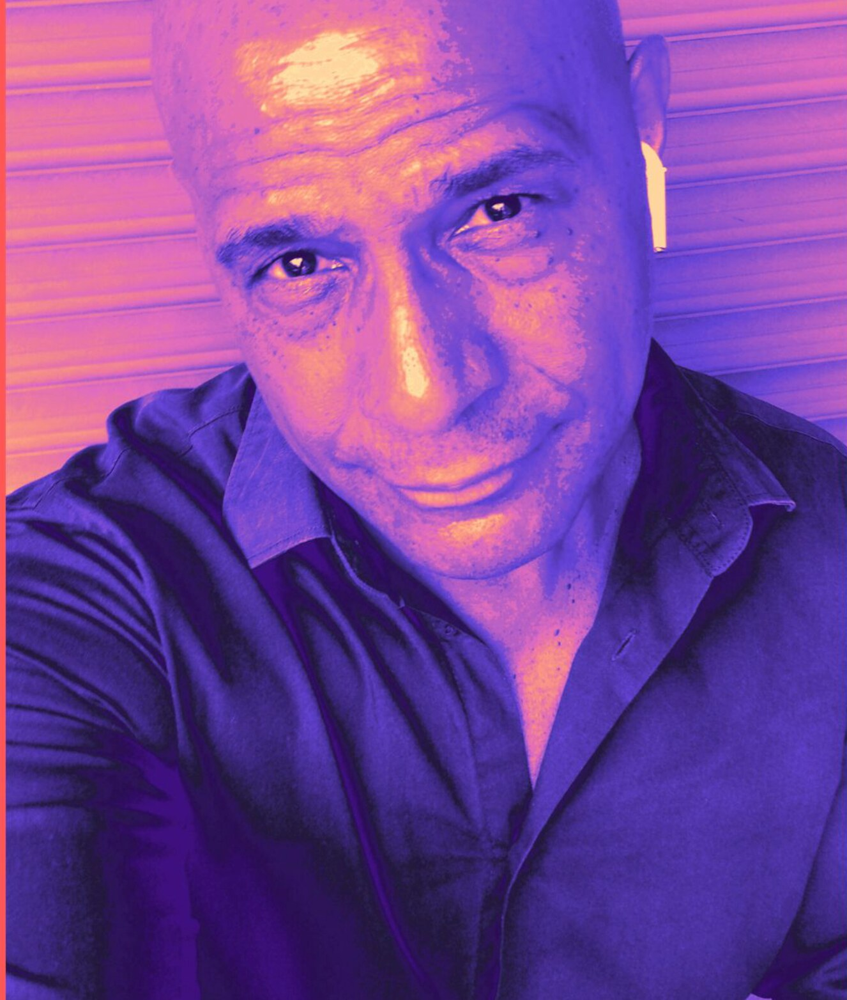

TONY CARRASCO
Private player preview

DJ • Producer • RemixerTony
Tony
Carrasco
Ten selections from a life inside the rhythm.
Track 01
Tony Carrasco • Player preview
0:004:37
72%
Original full-quality audio supplied by Tony Carrasco.
Playlist10 tracks
Choose a track or press play to preview the player.